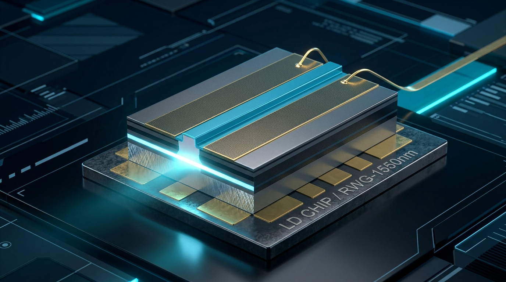
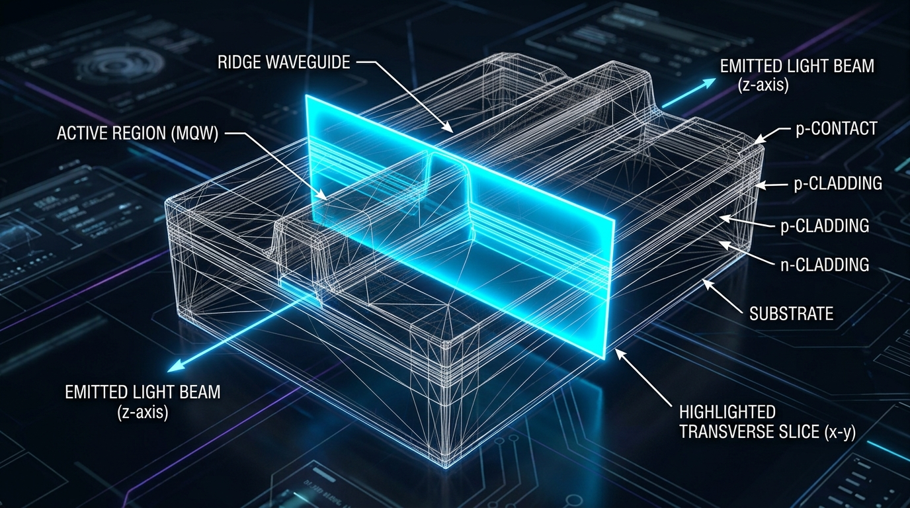
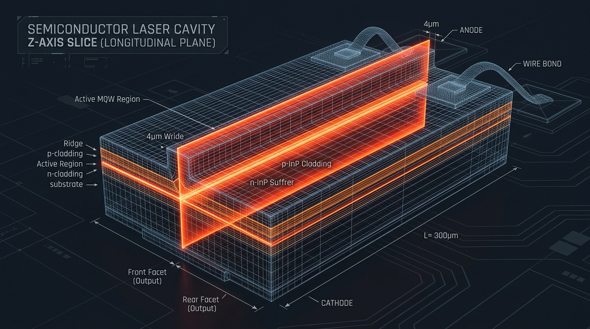

PLaser
基于物理信息机器学习（PINN）的实时仿真，计算仅需毫秒级，求解准三维光电热耦合模型。
器件架构与求解器映射
交互式导航：展示如何将激光器物理封装切片并映射至低维几何求解器。

a. 3D 芯片实体图半导体脊波导激光二极管芯片的物理实体装配结构。

b. 横向截面切片 (x-y)高亮显示垂直于光传播方向的截面，由 2D Elmer FEM 求解。

c. 纵向腔切片 (z)高亮显示沿有源区 z 轴传播方向的纵向腔网格通道。
14引脚蝶形封装与激光芯片
在光纤通信中，边发射半导体激光器集成于标准的 14 引脚蝶形封装中。该装配体内置激光芯片、热电制冷器（TEC）、温度监测热敏电阻、光隔离器和光纤耦合透镜。
激光芯片本身（如图 a 所示）是生长在 磷化铟 (InP) 衬底上的微米级半导体结构。电流通过顶部的条形电极注入，在有源 多量子阱 (MQW) 波导层中激发光学增益。脊波导结构在水平和垂直方向限制高强度光场，使相干的基模光束从解理的镜面出射。
过渡热沉装配与热耗散
为了在高功率连续运行下有效避免器件热退化，激光芯片通常以 p面朝下 (p-side down) 的方式贴装在导热极佳的 铜 (Cu) 或碳化硅 (SiC) 过渡热沉上。
由于产生热量的多量子阱有源区距离 p 电极顶表面仅数微米，倒装芯片可以提供极短的向外导热路径。运行时的焦耳热和非辐射俄歇复合热流能被底部的热电制冷器（TEC）快速抽走，从而避免激射热饱和与功率衰退现象。
2D Elmer FEM 横向截面求解器
横截面（垂直于光传播方向的 $x-y$ 面，见图 b）决定了光波导的模场 confinement 和 localized 物理特性。参考求解器 Elmer FEM 求解横向截面上的二维耦合微分方程：
- 有源区波导几何形状: 并非假定静态坐标，有源区宽度 $w_{\text{active}}$ 和厚度 $d_{\text{active}}$ 均为完全参数化的输入，使得波导边界和模场腰部形状可动态自适应调整。
- 静电场 (泊松方程): 求解在接触电极偏置下的局部静电势 $\psi(x, y)$。
- 载流子输运 (漂移-扩散方程): 控制侧向电流扩展和电子/空穴浓度分布。
- 波动光学 (矢量亥姆霍兹方程): 计算光波导的本征模场形状 $\Psi(x, y)$ 和限制因子 $\Gamma$。
- 热传导 (晶格热传导方程): 计算脊波导截面上的局部晶格温度分布 $T(x, y)$ 及其热点。
 Elmer 二维有限元网格剖分结构。
Elmer 二维有限元网格剖分结构。
1D 纵向腔与空间烧孔
沿传播方向（$z$ 轴，见**图 c**，腔长 $L$），前向和后向光波包络在镜面间发生反射。由于前向与后向光波在镜面反射时的干涉与放大，形成了光子沿腔体的能量梯度。
在非对称腔面镀膜中（如后腔面 $R_1 \approx 90\%$ 高反膜，前腔面 $R_2 \approx 5\%$ 增透膜），光功率朝前向 facet 指数级增长。这种功率激增导致前镜附近的载流子由于激射而被剧烈消耗，形成载流子凹陷，称为 空间烧孔 (SHB) 效应，它会直接影响单模激射的波长稳定性。
视频演示
PLaser 仪表盘上的实时参数扫描与多物理场剖面分析演示。
算法方法与物理模型
物理信息损失约束下的深度多任务神经网络训练。
PLaser 不仅进行数据插值，而且在神经网络的反向传播过程中施加了半导体物理定律约束。在网格点上强加了局部的载流子速率连续性方程：
其中有源区横截面积 $A_{\text{act}} = w_{\text{active}} \times d_{\text{active}}$（原生参数化二维波导高度与宽度维度）动态缩放载流子注入率 $G_{\text{inj}} = I_{\text{active}} / (q_0 \cdot L \cdot A_{\text{act}})$ 与受激辐射率 $R_{\text{stim}} = (g(N) \cdot P) / (A_{\text{act}} \cdot E_{\text{phot}})$。
这一物理项可有效惩罚不合物理规律的输出，使模型在阈值点附近（$I \approx I_{\text{th}}$）或高温严重热衰减（$T_0 > 320\text{ K}$）等非线性区域依然保持极高的物理一致性。
神经网络的输入是七维的设计参数空间 $[R_1, R_2, L, T_0, I_{\text{active}}, w_{\text{active}}, d_{\text{active}}]$，输出为 105 维标量指标和纵向剖面网格数据数组，在隐藏层之间采用 GELU 激活函数。
计算性能与加速比
百万倍加速使得实时设计交互成为可能。
传统多物理场迭代环路的主要耗时瓶颈在于多物理场收敛。生成单组扫参配置需要连续收敛泊松、载流子输运、热量传导以及矢量波动光学波动解。PLaser 完美解决了这一耗时问题：
| 求解器模式 | 计算延迟 | R² 精度系数 |
|---|---|---|
| Elmer 2D FEM 求解器 | 12 - 25 秒 | 1.000 (参考基准) |
| 2.5D 纵向射击求解器 | 1.2 - 2.8 秒 | 1.000 (参考基准) |
| PLaser PINN 代理模型 | < 5 毫秒 | > 0.997 |
毫秒级超快执行速度支持了在极短时间内完成激光器腔面反射率与有源区材料结构的寻优扫参，极大加速了工程开发流程。
技术验证与精度指标
PINN 代理模型已经在独立的保留验证集上完成了严苛的验证。预测值与真实 Elmer / 射击法求解器结果高度对齐，表明在未见过的腔长、膜系和温度下模型均具有出色的物理外推与泛化能力：
- 光输出功率 $R^2$: 0.998
- 电光转换效率 WPE $R^2$: 0.997
- 终端电流 $R^2$: 0.999
- 平均激射功率残差: < 0.45 mW
 图 3.1: 训练过程中数据损失与物理方程式损失均成功收敛了 6 个数量级。
图 3.1: 训练过程中数据损失与物理方程式损失均成功收敛了 6 个数量级。
安装与新手指南
在本地部署并运行 PLaser 只需不到 2 分钟。
1. 克隆代码仓库并配置虚拟环境
推荐在较浅的路径下配置 Python 环境，避免 Windows 发生路径长度受限问题：
git clone https://github.com/ZhenwenWan/PLaser.git cd PLaser python -m venv .venv .\.venv\Scripts\Activate.ps1 # 激活 Windows 环境 pip install -r requirements.txt
2. 启动预训练 Web 仪表盘
使用包含的训练权重一键拉起前端应用：
python -m streamlit run app.py
此时可在浏览器中通过交互式拉动滑块，以 5ms 的延迟观察腔内多物理剖面线宽的演化。